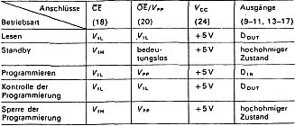
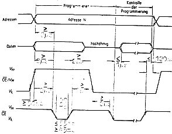
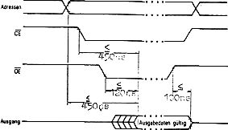

Nascom Journal |
Oktober/November 1982 · Ausgabe 10/11 |
Die EPROM’s vom Typ 2732 und 2764 werden inzwischen auch für den Hobbybereich immer interessanter. Aus diesem Grunde soll hier ein EPROM-Programmer für diese Typen beschrieben werden, der mit geringem Hardwareaufwand und unter 1K Software auskommt.
Da nicht jeder über ein teures Datenbuch verfügt oder für die vorgenannten EPROM-Typen anschaffen möchte, stelle ich zunächst die charakteristischen technischen Daten vor. Die Pinbelegungen, Zeitdiagramme und Kurzbeschreibungen für Auslesen und Programmieren erlauben eventuell bereits vorhandene 2708/2716-EPROM-Programmer selbst zu modifizieren. 2732/2764-EPROM’s sind dazu „ausreichend“ kompatibel.
Organisation................4K x 8 Versorgungsspannung Vcc......5V+-5% Versorgungsspannung Vpp......25V+-1V Stromaufnahme Vcc(aktiv).....85mA typ. Stromaufnahme Vcc(standby)...15mA typ. Stromaufnahme Vpp............30mA max. Verlustleistung aktiv........525mW max. Verlustleistung standby......132mW max.
Die Abstufungen hinsichtlich Verzögerungszeiten, Gehäuseformen, Temperaturgrenzdaten usw. weichen nicht wesentlich von den bei 2708/2716-EPROM’s bekannten Werten ab.
Die vorliegende Betriebsartenübersicht beschreibt den Zustand der Steuereingänge CE und OE/Vpp in der jeweils erwünschten Betriebsart.
Wenn Adressen und Daten stabil anliegen, wird zuerst der Eingang OE/Vpp auf 25V vorbereitet. Durch einen Low-Impuls von ca. 50ms auf den Eingang CE erfolgt dann die Programmierung der eingestellten Adresse, wahlweise sequentiell oder einzeln. Mit OE/Vpp und CE auf Low-Potential kann eine Prog.-Kontrolle durchgeführt

werden. Die Grenzzeiten aufeinander folgender Signale sind im Zeitdiagramm eingetragen. Das Löschen des EPROM’s erfolgt wie von den Typen 2708/2716 her bekannt.
Im Zeitdiagramm sind die Bedingungen für die Chip-Enable- und Output-Enable-Eingänge (CE und OE) sowie max. Verzögerungszeiten für stabile Daten am Ausgang eingetragen, im Grunde nichts Neues.
(Fortsetzung im 80-Bus-Journal 1/83)

| Seite 13 von 28 |
|---|